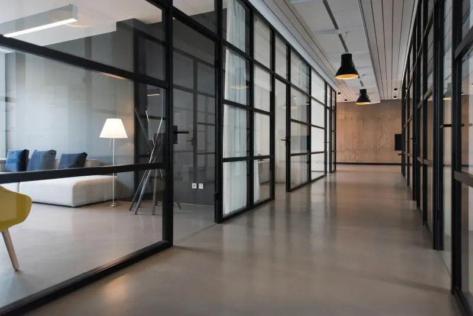
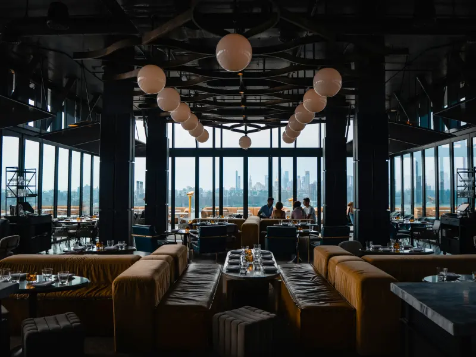

تصميم مواقع احترافية تساعد نشاطك على النمو وتحقيق المزيد من العملاء
في عالم أصبح فيه الإنترنت هو الوجهة الأولى للعملاء، لم يعد امتلاك موقع إلكتروني مجرد خيار، بل أصبح جزءًا أساسيًا من نجاح أي نشاط تجاري. سواء كنت تمتلك شركة، متجرًا إلكترونيًا، عيادة، مكتب محاماة أو أي مشروع آخر، فإن الموقع الإلكتروني الاحترافي يمنحك حضورًا قويًا على الإنترنت ويزيد من ثقة العملاء في علامتك التجارية.
في Brandiva نقدم خدمات تصميم مواقع احترافية تجمع بين التصميم العصري، سرعة الأداء، سهولة الاستخدام، والتوافق الكامل مع محركات البحث (SEO)، حتى تحصل على موقع لا يبدو رائعًا فقط، بل يساعدك أيضًا على جذب المزيد من العملاء وتحقيق نتائج حقيقية.
كل موقع نقوم بتصميمه يتم تطويره بما يتناسب مع طبيعة نشاطك التجاري، ويكون متجاوبًا مع الهواتف الذكية والأجهزة اللوحية وأجهزة الكمبيوتر، مع التركيز على تجربة المستخدم وسهولة الوصول إلى المعلومات.
قد يعتمد بعض أصحاب الأعمال على صفحات التواصل الاجتماعي فقط، ولكن الواقع أن الموقع الإلكتروني يمنحك مزايا لا يمكن لأي منصة أخرى توفيرها.
وجود موقع إلكتروني احترافي يساعدك على:
بناء الثقة مع العملاء
الظهور في نتائج بحث Google
عرض خدماتك ومنتجاتك بشكل احترافي
استقبال طلبات العملاء على مدار 24 ساعة
زيادة فرص البيع
تقليل الاعتماد على الإعلانات المدفوعة فقط
تعزيز هوية علامتك التجارية
جمع بيانات العملاء وتحليلها لتحسين الأداء
الموقع الإلكتروني ليس مجرد صفحات تعرض معلومات عن نشاطك، بل هو أداة تسويقية تعمل باستمرار لمساعدتك على الوصول إلى عملاء جدد وتنمية أعمالك.
خدمات تصميم المواقع التي نقدمها
في Brandiva نقدم حلولًا متنوعة لتناسب احتياجات مختلف الأنشطة التجارية، مع الحرص على تقديم تصميم يجمع بين الأداء القوي وسهولة الاستخدام.
01

تصميم مواقع الشركات
إذا كنت تمتلك شركة وتبحث عن وسيلة احترافية لعرض خدماتك وبناء ثقة العملاء، فإن موقع الشركة يعد من أهم أدوات التسويق الرقمي.
نقوم بتصميم مواقع الشركات بطريقة تعكس هوية العلامة التجارية، مع صفحات مخصصة للخدمات، من نحن، فريق العمل، معرض الأعمال، ونماذج التواصل، بالإضافة إلى تحسين سرعة الموقع وتجهيزه للظهور في نتائج البحث.
02
تصميم المتاجر الإلكترونية
امتلاك متجر إلكتروني احترافي يمنحك القدرة على بيع منتجاتك على مدار الساعة دون قيود.
نقوم بتطوير متاجر إلكترونية تتميز بسهولة إدارة المنتجات، خيارات دفع متعددة، ربط شركات الشحن، صفحات منتجات محسنة، وتجربة شراء سلسة تساعد على زيادة معدل التحويل وتحسين تجربة العملاء.
03
تصميم مواقع الأطباء والعيادات
يعتمد المرضى اليوم على الإنترنت للبحث عن الأطباء وحجز المواعيد.
لذلك نقوم بتصميم مواقع طبية احترافية تتضمن معلومات الطبيب، الخدمات الطبية، الحجز الإلكتروني، المقالات الطبية، وموقع العيادة، مع مراعاة سهولة الاستخدام وسرعة تحميل الصفحات.
04
تصميم مواقع المحامين
الموقع الإلكتروني يمثل واجهة احترافية لمكتب المحاماة ويساعد العملاء في التعرف على الخدمات القانونية بسهولة.
نصمم مواقع للمحامين تتضمن صفحات الخدمات القانونية، نبذة عن المكتب، فريق العمل، الأسئلة الشائعة، وطرق التواصل، مع التركيز على إبراز المصداقية والخبرة.
05

تصميم مواقع المطاعم والكافيهات
يساعد الموقع الإلكتروني المطاعم على عرض قوائم الطعام، استقبال الطلبات، الحجز الإلكتروني، وعرض العروض والفعاليات.
نقوم بتطوير مواقع سهلة الاستخدام وسريعة التحميل مع تصميم جذاب يعكس هوية المطعم ويشجع العملاء على التفاعل.
مميزات تصميم المواقع لدينا
في Brandiva لا نركز على تصميم موقع جميل فقط، بل نعمل على إنشاء موقع يساعدك في تحقيق أهدافك التجارية، سواء كانت زيادة المبيعات أو جذب عملاء جدد أو تعزيز وجود علامتك التجارية على الإنترنت.
01
تصميم احترافي يعكس هوية نشاطك
لكل نشاط تجاري شخصية مختلفة، لذلك لا نعتمد على تصميمات مكررة أو قوالب جاهزة للجميع. نقوم بدراسة نشاطك التجاري وجمهورك المستهدف لإنشاء تصميم يعبر عن هويتك ويمنح عملاءك تجربة استخدام مميزة.
02
سرعة تحميل عالية
سرعة الموقع من أهم العوامل التي تؤثر على تجربة المستخدم وترتيب الموقع في نتائج البحث.
لذلك نقوم بتحسين الصور، وضغط ملفات الموقع، واستخدام أحدث تقنيات البرمجة لضمان سرعة تحميل ممتازة على جميع الأجهزة.
03
متوافق مع الهواتف المحمولة
أكثر من نصف زيارات المواقع تأتي من الهواتف الذكية، لذلك يتم تصميم جميع المواقع لتعمل بكفاءة على:
الهواتف الذكية
الأجهزة اللوحية
أجهزة الكمبيوتر
الشاشات المختلفة
04
متوافق مع محركات البحث (SEO Friendly)
يتم تجهيز الموقع وفق أفضل ممارسات تحسين محركات البحث، بما يشمل:
هيكلة صحيحة للعناوين H1 وH2 وH3
روابط URL صديقة لمحركات البحث
سرعة تحميل محسنة
أكواد نظيفة
توافق مع Core Web Vitals
إمكانية إضافة Schema
سهولة أرشفة الصفحات
05
لوحة تحكم سهلة
بعد الانتهاء من تصميم الموقع، ستتمكن من إدارة المحتوى بسهولة دون الحاجة إلى خبرة برمجية، مثل:
إضافة صفحات جديدة
تعديل النصوص
رفع الصور
نشر المقالات
إدارة المنتجات (للمتاجر الإلكترونية)
06
أعلى مستويات الأمان
نطبق أفضل ممارسات الأمان لحماية الموقع من الاختراقات، مع إعدادات تساعد على الحفاظ على استقرار الموقع وأمان بيانات العملاء.
خطوات تنفيذ مشروع تصميم الموقع
في Brandiva نتبع خطة عمل واضحة لضمان تنفيذ المشروع بأعلى جودة وفي الوقت المحدد.
01
فهم نشاطك التجاري
في البداية نقوم بالتعرف على طبيعة نشاطك، والخدمات التي تقدمها، والجمهور المستهدف، وأهداف الموقع، حتى نتمكن من بناء موقع يخدم احتياجاتك الحقيقية.
02
دراسة المنافسين
نحلل المواقع المنافسة في نفس المجال لمعرفة نقاط القوة والفرص المتاحة، ثم نعمل على تقديم تجربة أفضل تساعدك على التميز.
03
تخطيط هيكل الموقع
قبل بدء التصميم نقوم بوضع هيكل واضح للموقع يشمل الصفحات الرئيسية، الأقسام، ومسارات التنقل، لضمان سهولة الاستخدام وتحسين تجربة الزائر.
04
تصميم واجهات المستخدم
يتم تصميم واجهات احترافية تجمع بين الجمال والبساطة، مع التركيز على إبراز هوية علامتك التجارية وتشجيع الزائر على اتخاذ الإجراء المطلوب.
05
تطوير الموقع
بعد اعتماد التصميم، يتم تحويله إلى موقع إلكتروني سريع ومتجاوب باستخدام أحدث التقنيات، مع مراعاة الأداء والأمان.
06
اختبار الموقع
قبل إطلاق الموقع نقوم بإجراء اختبارات شاملة للتأكد من:
سرعة التحميل
توافق جميع الصفحات
عمل النماذج بشكل صحيح
التوافق مع مختلف المتصفحات
التوافق مع الهواتف
07
إطلاق الموقع
بعد التأكد من جاهزية الموقع يتم نشره على الاستضافة وربطه بالدومين وتجهيزه للعمل بكفاءة.
لماذا تختار Brandiva؟
اختيار شركة تصميم المواقع لا يعتمد فقط على السعر، بل على الخبرة والقدرة على تقديم موقع يحقق نتائج حقيقية.
في Brandiva نحرص على تقديم قيمة حقيقية لكل مشروع من خلال:
تصميمات عصرية تناسب مختلف الأنشطة
مواقع سريعة ومتوافقة مع معايير Google
تجربة استخدام مريحة وسهلة
دعم فني مستمر بعد التسليم
التزام بالمواعيد
أسعار تنافسية
إمكانية تطوير الموقع مستقبلًا
الاهتمام بتحسين محركات البحث منذ بداية المشروع
أسعار تصميم المواقع
لا يوجد سعر ثابت يناسب جميع المشاريع، لأن تكلفة تصميم الموقع تعتمد على عدة عوامل، منها:
عدد الصفحات المطلوبة
نوع الموقع
الوظائف المطلوبة
عدد اللغات
وجود متجر إلكتروني
أنظمة الدفع والشحن
التكامل مع الأنظمة الخارجية
بعد فهم احتياجات مشروعك، نقدم عرض سعر واضح يوضح جميع التفاصيل دون أي تكاليف غير متوقعة.
اطلب عرض سعر مخصّص
نقدم عرض سعر واضحًا يوضح جميع التفاصيل دون أي تكاليف غير متوقعة.
تعتمد تكلفة تصميم الموقع الإلكتروني على عدة عوامل، مثل عدد الصفحات، ونوع الموقع، والوظائف المطلوبة، وهل يتضمن متجرًا إلكترونيًا أو نظام حجز أو لغات متعددة. لذلك نقدم عروض أسعار مخصصة تناسب احتياجات كل مشروع.
كم يستغرق تصميم موقع إلكتروني؟
تختلف مدة التنفيذ حسب حجم المشروع، ولكن غالبًا تستغرق المواقع التعريفية من أسبوع إلى ثلاثة أسابيع، بينما قد تحتاج المتاجر الإلكترونية أو المشاريع الكبيرة إلى فترة أطول وفقًا لمتطلبات العمل.
هل سيكون الموقع متوافقًا مع الهواتف المحمولة؟
نعم، جميع المواقع التي نقوم بتصميمها متجاوبة بالكامل مع الهواتف الذكية والأجهزة اللوحية وأجهزة الكمبيوتر لضمان أفضل تجربة للمستخدم.
هل يمكنني تعديل محتوى الموقع بعد التسليم؟
بالتأكيد، يتم تسليم الموقع مع لوحة تحكم سهلة الاستخدام تتيح لك تعديل النصوص والصور وإضافة الصفحات أو المقالات دون الحاجة إلى خبرة برمجية.
هل تصميم الموقع يشمل تحسين محركات البحث (SEO)؟
نقوم بتصميم المواقع وفق أفضل ممارسات SEO من حيث سرعة الموقع، وهيكلة الصفحات، والعناوين، والروابط، ليكون الموقع جاهزًا لبدء تحسين ترتيبه في نتائج البحث. كما نقدم خدمة SEO متكاملة للراغبين في زيادة الظهور على Google.
هل يمكن تصميم متجر إلكتروني؟
نعم، نقدم خدمات تصميم متاجر إلكترونية احترافية مع إمكانية إدارة المنتجات، وربط وسائل الدفع، وشركات الشحن، وإدارة الطلبات بسهولة.
هل يمكن ربط الموقع بوسائل التواصل الاجتماعي؟
نعم، يمكن ربط الموقع بحساباتك على Facebook وInstagram وLinkedIn وWhatsApp وغيرها، لتسهيل التواصل مع العملاء وتعزيز حضورك الرقمي.
هل تشمل الخدمة شراء الدومين والاستضافة؟
يمكننا مساعدتك في اختيار الدومين المناسب وتوفير استضافة سريعة وآمنة، بالإضافة إلى إعداد الموقع بالكامل حتى يصبح جاهزًا للعمل.
هل يمكن تطوير الموقع في المستقبل؟
نعم، يتم بناء المواقع بطريقة تسمح بإضافة صفحات أو خدمات أو وظائف جديدة في أي وقت دون الحاجة إلى إعادة تصميم الموقع بالكامل.
هل الموقع سيكون سريعًا؟
نعمل على تحسين سرعة تحميل الموقع باستخدام أفضل الممارسات، مثل ضغط الصور وتحسين الأكواد واختيار استضافة قوية، مما يساهم في تحسين تجربة المستخدم وترتيب الموقع في نتائج البحث.
ما الفرق بين الموقع الإلكتروني وصفحات التواصل الاجتماعي؟
صفحات التواصل الاجتماعي مهمة للتفاعل مع العملاء، لكنها لا تغني عن الموقع الإلكتروني. الموقع يمنح نشاطك التجاري هوية احترافية، ويتيح لك الظهور في نتائج البحث، والتحكم الكامل في المحتوى، وبناء ثقة أكبر لدى العملاء.
هل تقدمون دعمًا فنيًا بعد تسليم الموقع؟
نعم، نوفر دعمًا فنيًا لمساعدتك في حل المشكلات والإجابة عن استفساراتك، بالإضافة إلى إمكانية تقديم خدمات الصيانة والتحديث بشكل دوري.
هل يمكن إضافة أكثر من لغة للموقع؟
نعم، يمكن تصميم مواقع متعددة اللغات لتناسب الشركات التي تستهدف عملاء من دول وأسواق مختلفة.
هل الموقع آمن ضد الاختراق؟
نلتزم بتطبيق أفضل ممارسات الأمان، مثل استخدام شهادات SSL، وتحديثات النظام، وإعدادات الحماية، مما يساعد على تقليل المخاطر والحفاظ على بيانات الموقع.
هل يمكن نقل موقعي الحالي إلى استضافة جديدة؟
نعم، نوفر خدمة نقل المواقع إلى استضافة جديدة مع الحفاظ على البيانات وتقليل فترة التوقف قدر الإمكان.
ما هي المعلومات التي أحتاج إلى توفيرها قبل بدء المشروع؟
عادةً نحتاج إلى شعار الشركة، ونبذة عن النشاط، والخدمات أو المنتجات، وبيانات التواصل، وأي صور أو محتوى ترغب في إضافته، وسنساعدك في استكمال أي عناصر ناقصة.
هل تقدمون تصميمات مخصصة أم تعتمدون على قوالب جاهزة؟
نعتمد على تصميمات مخصصة تناسب هوية كل نشاط تجاري، مع إمكانية استخدام حلول مرنة عند الحاجة، بما يحقق التوازن بين الجودة والميزانية.
لماذا أختار Brandiva لتصميم موقعي؟
لأننا نركز على تقديم مواقع تجمع بين التصميم الاحترافي، وسرعة الأداء، وسهولة الاستخدام، والتوافق مع محركات البحث، مع الاهتمام بتحقيق أهداف نشاطك التجاري وليس مجرد إنشاء موقع إلكتروني.
جاهز لموقع يحقق لك نتائج حقيقية؟
تواصل معنا وسنفهم نشاطك ونقترح عليك أنسب حل مع عرض سعر واضح.